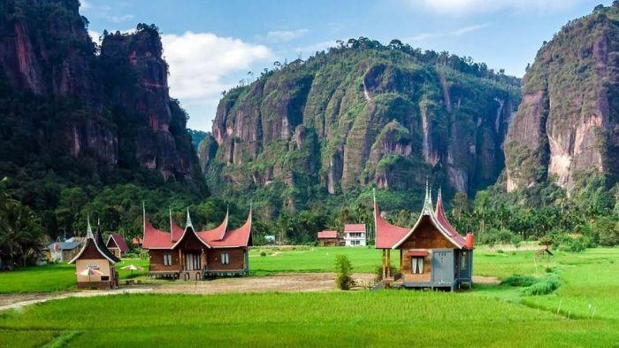
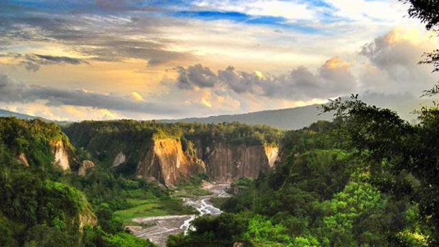

Lembah Harau
Lembah Harau adalah sebuah ngarai dekat Kota Payakumbuh di Kabupaten Lima Puluh Kota, provinsi Sumatera Barat. Lembah Harau diapit dua bukit cadas terjal dengan ketinggian mencapai 150 meter berupa batu pasir yang terjal berwarna-warni, dengan ketinggian 100 sampai 500 meter. Topografi Cagar Alam Harau adalah berbukit-bukit dan bergelombang. Tinggi dari permukaan laut adalah 500 sampai 850 meter, bukit tersebut antara lain adalah Bukit Air Putih, Bukit Jambu, Bukit Singkarak, dan Bukit Tarantang.
📍lokasi:

Danau Maninjau
Danau Maninjau (berarti "pemandangan" atau "peninjauan" dalam bahasa Minangkabau) adalah sebuah danau kaldera di Tanjung Raya, Kabupaten Agam, Sumatera Barat, Indonesia. Danau ini terletak sekitar 140 kilometer (87 mi) sebelah utara Padang, ibu kota Sumatera Barat, 36 kilometer (22 mi) dari Bukittinggi, 27 kilometer (17 mi) dari Lubuk Basung, ibu kota Kabupaten Agam.
📍lokasi:

Ngarai Sianok
Ngarai Sianok merupakan sebuah lembah curam (jurang) yang terletak di perbatasan Kota Bukittinggi, di Kecamatan IV Koto, Kabupaten Agam, Sumatera Barat. Lembah ini memanjang dan berkelok sebagai garis batas kota dari selatan Ngarai Koto Gadang sampai ke nagari Sianok Anam Suku, dan berakhir di Kecamatan Palupuh. Ngarai Sianok memiliki pemandangan yang sangat indah dengan latar belakang Gunung Singgalang dan Pegunungan Bukit Barisan. Ngarai Sianok menjadi salah satu objek wisata andalan provinsi Sumatera Barat.
📍lokasi: